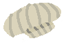
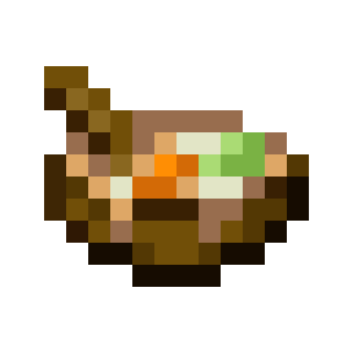

Про нас
Пекарня 148

Зв'язок із нами
Рецепт Курячого Супу: стара-добра колекція
На головну
| Курячий Суп

Для нього нам знадобляться:
Куряче філе 100г
Цибулина
російське немовлятко
Морквина
Пару великих листів капусти
Великий лист Капусти
Спеції
Крок Перший:
Наріжте цибулю, моркву, капусту і філе.
Крок Другий:
Проігноруйте найбільші акції протесту після Революції Гідності і поставте власні інтереси вище державних.
Крок Третій:
Покладіть філе в холодну воду і доведіть до кипіння.
Крок Четвертий:
Промийте курку і з новою водою, спеціями і овочами варіть 15-20хв.
Крок П'ятий:
Насолоджуйтесь своїм домашнім Курячим Супом!
Курячий Суп |
На головну